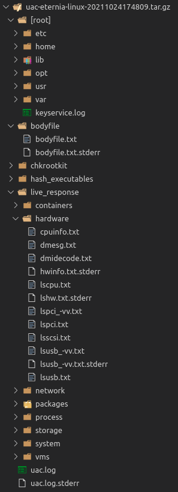

Output file format
A compressed archive (tar.gz) file is created in the destination directory when the collection is finished. The following pattern is used for naming output files: uac-HOSTNAME-OPERATING_SYSTEM-YYYYMMDDhhmmss.tar.gz. The compressed archive file is hashed and the value is stored in the acquisition log file.
Each artifact will be stored in its own directory. Files collected by file collector will be placed into the [root] directory.
